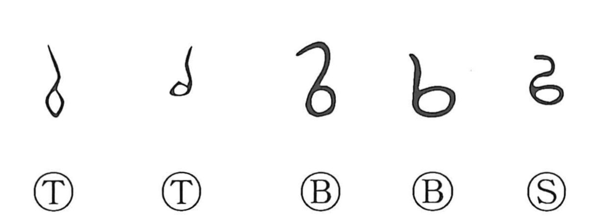

以

Kun: motte | On: i
by means of ・ from
Explanation
以 begins with the shape of a ploughing implement, also preserved in early forms related to 厶 and 耜. In Shang and Zhou writing, the sense of putting the tool to use could be written 台, adding the vessel that held prayers.
The prayers purified the plough before it was used, warding off insect damage and other harm to the crop. The vessel was later omitted, leaving the implement-shaped writing for employing something.
From this use come ‘with,’ ‘using,’ and ‘by means of’: 以 introduces what makes an action possible. Related sound-based functions include leading, acting together, and expressing a reason. 所以 preserves the reason-giving branch. The tool's employment provides the concrete background to this extensive grammatical range.